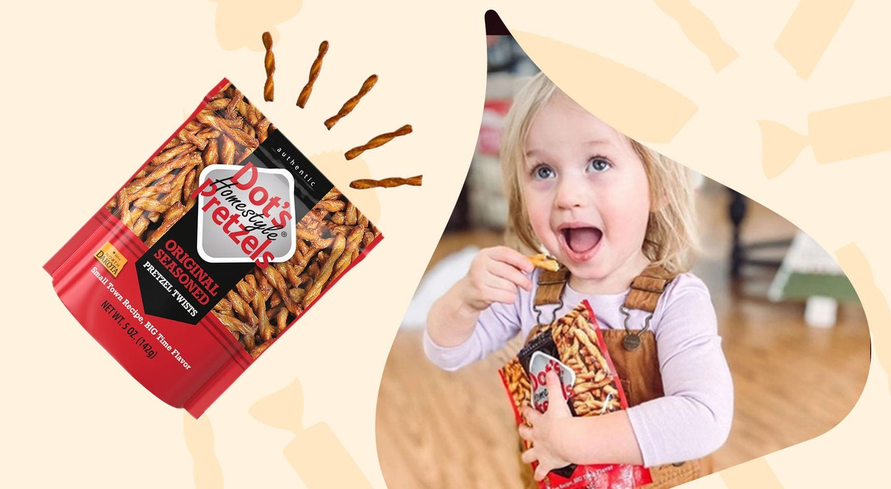

More Choices for More Moments

People care about the food they eat. They want to know what’s inside, and they want to have choices that fit their changing needs and lifestyle.
Skinny Pop® Popcorn was founded in 2010 with a simple premise: people deserve snacks that taste delicious AND are good for them.
Seriously tasty Pirate’s Booty puffs and straws have straightforward ingredients for the entire crew.
With roots in sports nutrition, ONE™ has always been a protein snack bar pioneer with exceptional taste, texture and ingredients.
Delicious, drool-worthy sweets that are botanically sweetened—meaning no refined or processed sugars.